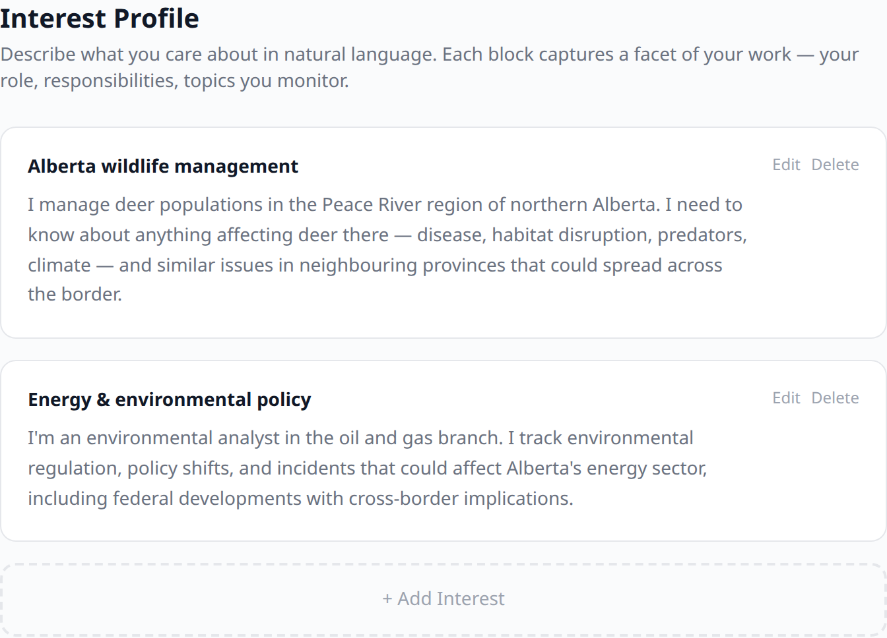
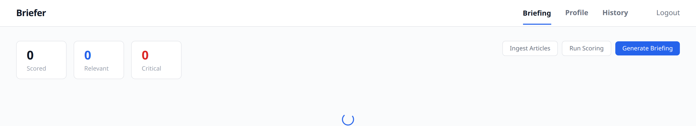

Full-stack · ML
Briefer
Personalized news intelligence with a multi-stage scoring cascade
Overview
Briefer started from a real problem. My brother is a policy analyst for the Government of Alberta, and a lot of his day-to-day is reading news to surface things that affect his file — not just articles that mention it directly, but second-order connections. A winter tick outbreak in Saskatchewan matters to someone managing Alberta deer populations, but the article probably won't mention Alberta or deer. Keyword alerts catch the obvious matches and miss everything like that. Briefer is the tool I'd want him to have: something that reasons about why an article matters to a specific person instead of pattern-matching on terms.
Technology Stack
Web API
- ASP.NET Core (.NET 10)
- C#
- JWT auth
- PostgreSQL 16
ML Service
- Python + FastAPI
- Ollama + Gemma 4
- sentence-transformers
- bge-reranker cross-encoder
Data & Ingestion
- PostgreSQL 16
- Qdrant (vectors)
- trafilatura (extraction)
- RSS-first ingestion
Architecture & Design Choices
Running a frontier LLM against every candidate article doesn't work. Five thousand articles per user per day, scored by an LLM, would cost tens of dollars a day per user. That's not a product, that's a demo.
So instead the system filters progressively. A cheap vector search runs first and drops the obvious non-matches. A cross-encoder reranks what's left. Only the borderline cases actually hit the LLM.
Cost was the original driver, but running locally turned out to matter more. I run Briefer against Ollama with Gemma 4, which means the LLM serializes — I can't fan out parallel calls the way I could against a paid API. Every article the cascade filters out before the LLM is a direct speedup, not just a cost saving.
Twelve articles a cycle that the cross-encoder rejected still get sent to the LLM anyway. If any of them come back scored high, they get logged as cascade misses. Without a mechanism like that I'd have zero visibility into what the system was silently dropping; I'd only ever see what made it through, and the filtered-out pile would be invisible. Those logged misses are what I'll tune the thresholds against once there's enough usage data to see a pattern.
Users describe their interests in plain English paragraphs, not tags or boolean rules. Keyword alerts and tag filters only find matches on vocabulary overlap, which is exactly the cases Briefer is trying to get past. Giving the LLM rich context about why a user cares about something is what lets it reason about relevance rather than just matching vocabulary.
Each interest block is embedded and queried separately instead of being averaged into a single vector — standard multi-vector RAG. Averaging would blur niche interests into broad ones and defeat the whole point.
Project Media


The interest-profile editor and the Nuxt dashboard. Interests are described as plain-English blocks, not keyword rules; the dashboard exposes the pipeline as three explicit stages — ingest, score, generate — run locally against Ollama. (Dashboard shown before a briefing run.)
What Works Today
Briefer is still in active development. It runs end-to-end against Ollama with Gemma 4 — ingesting articles, building user profiles, running the cascade, producing scored and summarized briefings. I've demoed it to my brother and I'm hoping it becomes something he actually uses day-to-day. If that works, the next step is expanding it beyond one user and potentially turning it into a service.